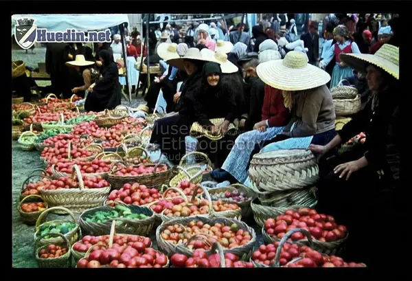
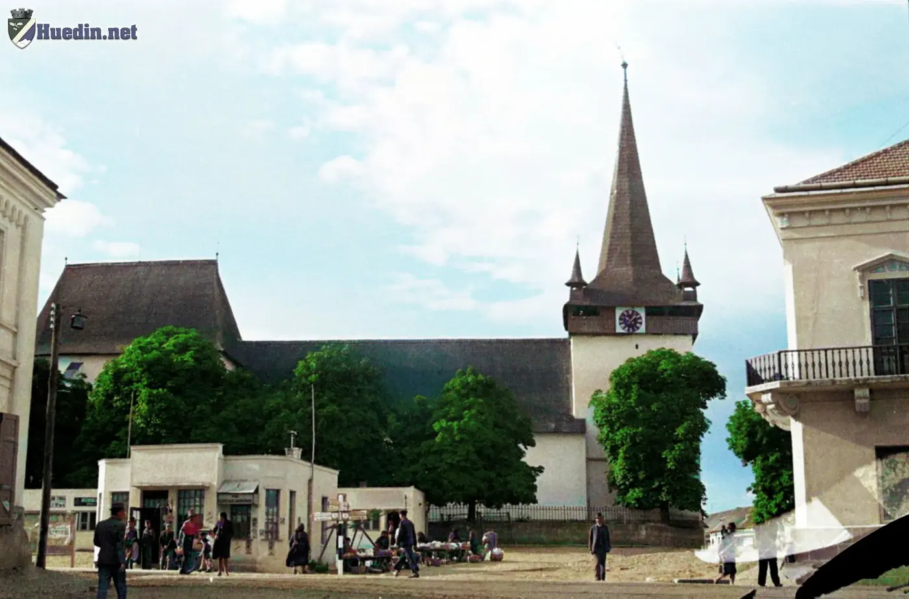

Biserica Reformată
- An / perioadă1941
- Perioadă1930–1960
- LocalitateHuedin
- Coordonate46.86442, 23.02664 (exacte)
- Cod arhivăp157
Sursa coordonatelor: Poziționare manuală pe harta OpenStreetMap.
Text original: „Anul: 1941”.
Descriere: Biserica Reformată din Huedin
Înapoi la rezultate